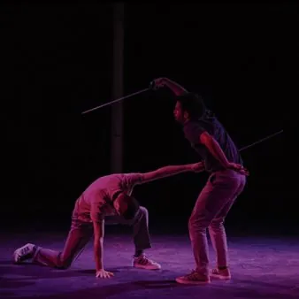

ven 27 nov · dalle 19:00
Hangar Teatri - "Volare x amore e tirannia" e "Kamikaze: spero che vada meglio dell'ultima volta"
La seconda giornata di “Come Pesci Volanti” - Festival di teatro emergente, si apre venerdì 27 novembre 2026 alle ore 19.00 con "VOLARE x amore e tirannia", di e con Pietro G. Barbanente, e prosegue alle ore 21.00 con “Kamikaze. Spero vada meglio dell’ultima volta”, di Giulio…
 Indicazioni
Indicazioni
- Costi e prenotazioni
- Costo non indicato · Prenotazione non indicata
- Programma
- Programma da verificare. Apri la fonte ufficiale per orari e possibili aggiornamenti.
- In caso di maltempo
- Nessuna indicazione specifica pubblicata.
- Note
- Acquisito automaticamente dalla fonte.
L’EVENTO
Descrizione completa
La seconda giornata di “Come Pesci Volanti” - Festival di teatro emergente, si apre venerdì 27 novembre 2026 alle ore 19.00 con "VOLARE x amore e tirannia", di e con Pietro G. Barbanente, e prosegue alle ore 21.00 con “Kamikaze. Spero vada meglio dell’ultima volta”, di Giulio Santolini e Lorenza Guerrini, con Giulio Santolini e Daniele Boccardi. Venerdì 27 novembre a Hangar Teatri, in via Luigi Pecenco 10 a Trieste.
Dopo anni di distanza dai palchi e dopo aver fallito nel suo tentativo di diventare famoso, torna in scena l’ultimo Iperperformer fisico con un nuovo progetto “VOLARE x amore e tirannia” , che parte da una domanda semplice: “posso volare?”.
Lo spettacolo vede al centro della scena un clown, un corpo che si mette alla prova e che scopre i propri limiti, fino al momento in cui la caduta richiede un colpevole. E' una ballata del fallimento dove il clown diventa l’ultimo eroe possibile e, a fare da sfondo allo spettacolo, c’è la fiaba del Re uccello, la storia di un personaggio che potrebbe essere un Re che vola, oppure semplicemente un uccello convinto di essere un Re.
“Kamikaze. Spero vada meglio dell’ultima volta" . Fin dalla sua nascita, il teatro ha avuto bisogno di almeno due elementi per esistere: l’attore e lo spettatore. Se inizialmente il confine tra i due ruoli era sfumato, con il passare degli anni e dei secoli la distanza si è fatta sempre più netta. Il pubblico ha iniziato ad abituarsi a sedere e a ricevere più silenziosamente ciò che il performer aveva da offrire.
In “Kamikaze. Spero vada meglio dell’ultima volta” questo rapporto viene rimesso in discussione. Il patto tra attore e spettatore viene sancito fin dall’inizio con un prologo che rompe ogni barriera e fornisce al pubblico un vero e proprio manuale di istruzioni per accedere al dispositivo. Seguono una serie di round in cui Giulio Santolini, insieme al tecnico in scena con lui, sfida il gusto, la morale e la noia attraverso brevi performance che vengono giudicate e valutate immediatamente dalla platea. Al termine di ogni performance il pubblico vota: se la maggioranza degli spettatori è soddisfatta, al performer viene assegnato un premio; se è delusa, una punizione. Poi un nuovo round, una nuova creazione, una nuova sentenza.
È consigliata la prenotazione a biglietteria@hangarteatri.it o al numero di telefono +39 352 0659043. I biglietti sono acquistabili in prevendita su Liveticket.
IL PROGRAMMA
Programma e orari
Appuntamenti raccolti dalle fonti elencate. Dove manca un orario, non è ancora disponibile in questa scheda.
Programma pubblicato
- Dal 2026-11-27 al 2026-11-27
INFORMAZIONI UTILI
Prima di partire
- Controllare la fonte prima di partire.
ORGANIZZAZIONE